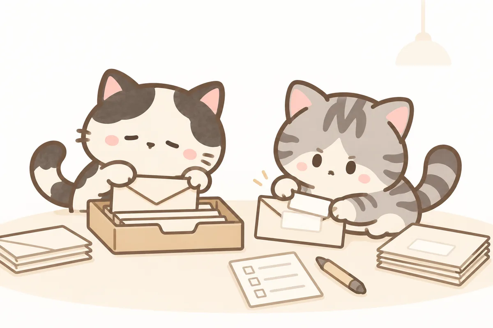
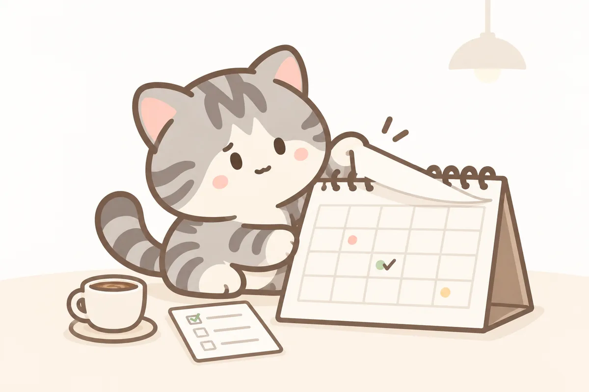
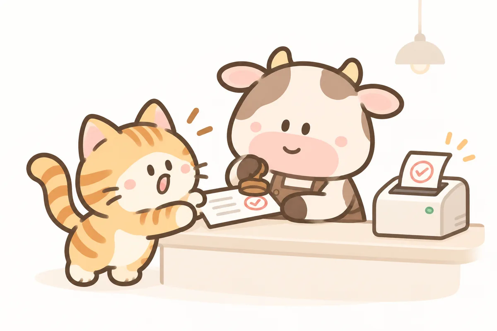
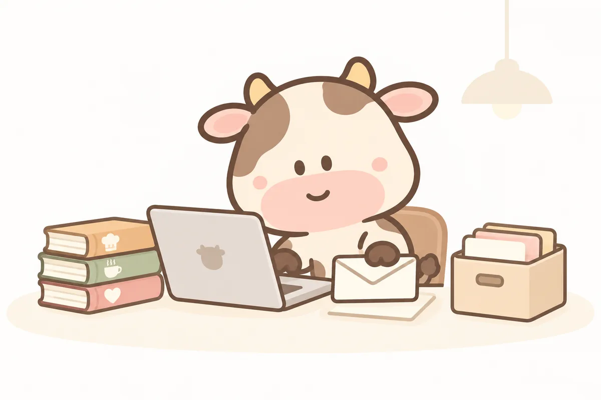
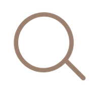
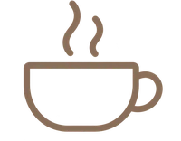
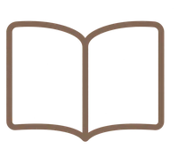
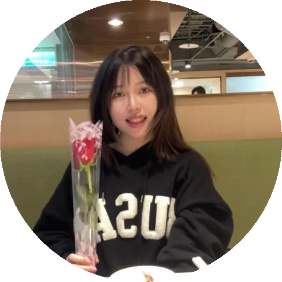
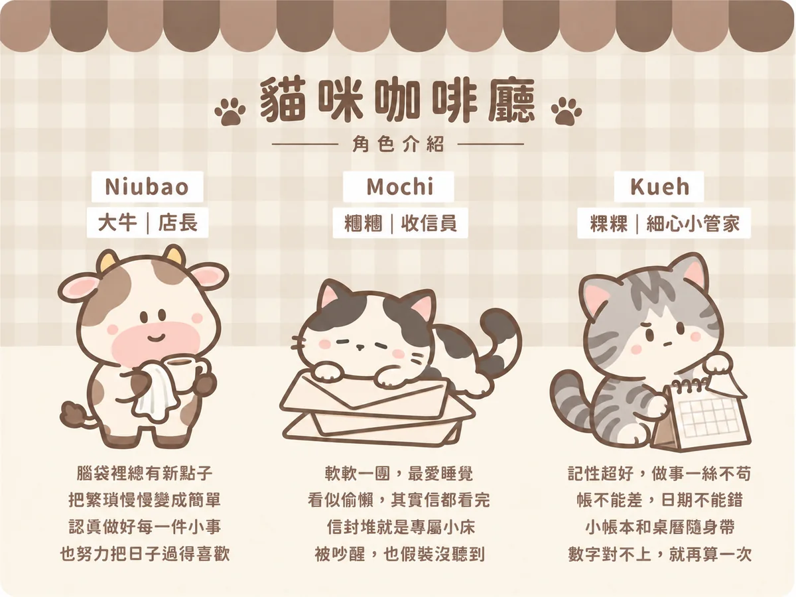

No.01641 封通知信不用再一封封點開
懂你工作的信箱小幫手
兩個計畫（SOS、跨校通識）的共用信箱，SOS 最忙一週有 333 封，真正要回的信常被通知淹沒。現在每個工作日 8:00、15:00，兩個 AI 小幫手分工上場：遮遮先把個資蓋起來，信信再讀信分類，整理成一封報告寄給承辦人。我也把它做成公開起始包，作者自測約 20 分鐘就能建好一套。
我是課程規劃師，獨立營運一個橫跨 59 所大學的全國性線上學習計畫。下面每一件作品，都是我和 AI 一起做出來、現在每天真的在用的系統。
最能代表我的四件作品：三個每天在跑的系統，加上我管理 AI 的方法。點卡片可以看完整說明與截圖。
名詞說明SOS暑期線上學院，我獨立營運的全國性大學暑期線上課程計畫跨校通識多所大學共享線上通識課，我負責名單、成績與各校窗口ewant育網，台灣的開放式線上課程平台，兩個計畫都在這上面跑

No.01兩個計畫（SOS、跨校通識）的共用信箱，SOS 最忙一週有 333 封，真正要回的信常被通知淹沒。現在每個工作日 8:00、15:00，兩個 AI 小幫手分工上場：遮遮先把個資蓋起來，信信再讀信分類，整理成一封報告寄給承辦人。我也把它做成公開起始包，作者自測約 20 分鐘就能建好一套。

No.02我把任務、追案進度、月曆和記帳收進一個離線的 HTML 檔，讓每天早上打開電腦的第一眼，就知道今天輪到我做什麼、球在誰手上。它已經開源在 GitHub，還有十隻貓狗吉祥物輪班陪上班。

No.03學生的換課、停修、退費申請，過去要下載 Word、來回補件、人工逐筆轉錄。我重建了整條流水線：格式錯誤在送出前就被擋下，審核狀態改一格，官方收執聯自動生成歸檔。這一季它自動出了 37 份收執聯，轉錄錯誤歸零。

No.04我不把 AI 當聊天工具，而是當一位需要工作手冊、會累積經驗、權限有邊界的同事。43 本手冊寫清楚三條業務線的規則、信件口吻與設計品味，長期記憶讓每次踩過的坑都變成防呆紀錄，雲端排程讓例行工作在我睡覺時照常進行。任何新的 AI 對話打開手冊就能立刻接手，這個網站也是這樣做出來的。
精選的四件在上面，這裡列其餘七件。每張截圖都是示範資料或去識別化版本；還在進行中的專案，卡片上會寫明目前進度。
三個步驟：看見重複、和 AI 一起做、寫成手冊交出去。每件作品的說明裡，都附上「這件事的通用做法」和「我踩過的坑」。

每天都在做一樣的事，就不該由人來做。我會先把藏在腦中的業務規則一條一條寫清楚，這一步最花工夫，也最關鍵。

我把需求拆解到 AI 做得出來、我驗收得了的程度。寄出鍵永遠在人手上：AI 負責整理與建議，人負責決策與把關。

每個系統都附操作手冊與 SOP，驗收標準是「新人照著做就能獨立運轉」。做完能交接，才算真的做完。
從每件作品整理出來的通用做法，換個單位、換個業務也適用。點「來自」可以看它在實際工作裡是怎麼來的。

傳播碩士（新媒體與使用者經驗組），現任國立陽明交通大學課程規劃師。到職八個月就獨立接下全國性暑期線上學院的年度執行，一邊營運、一邊把手上的重複業務逐一自動化。我相信好的行政是一種產品設計：使用者不用問第二次，就是最好的服務。
Chrissy Liu is a Course Planner at National Yang Ming Chiao Tung University, running a nationwide online summer school across 59 partner universities. With a master's degree in communication (new media and UX), she turns repetitive administrative work into self-running systems by managing AI as a teammate, and documents every system so the next person can run it without her.
